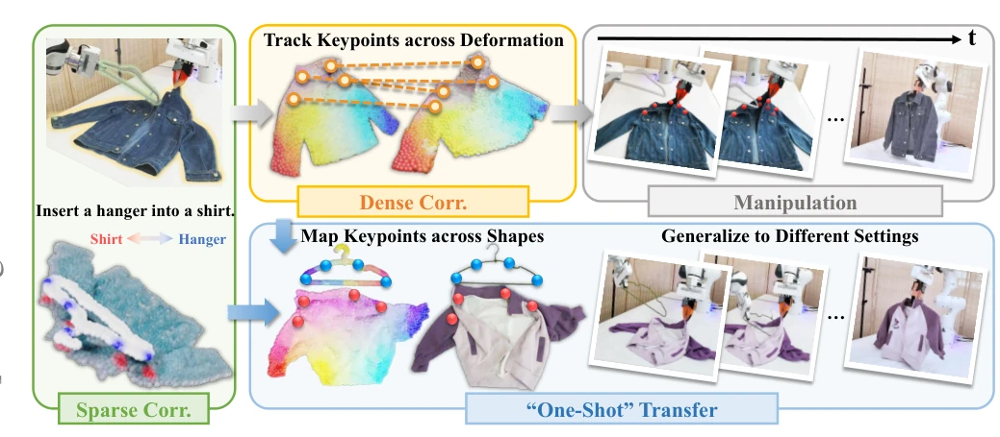
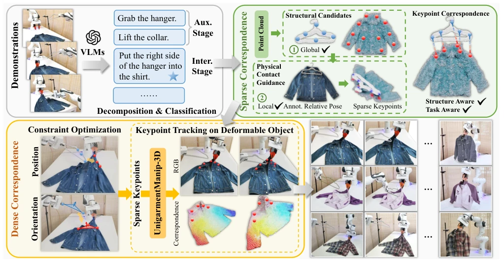
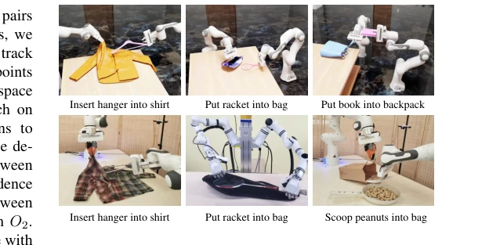
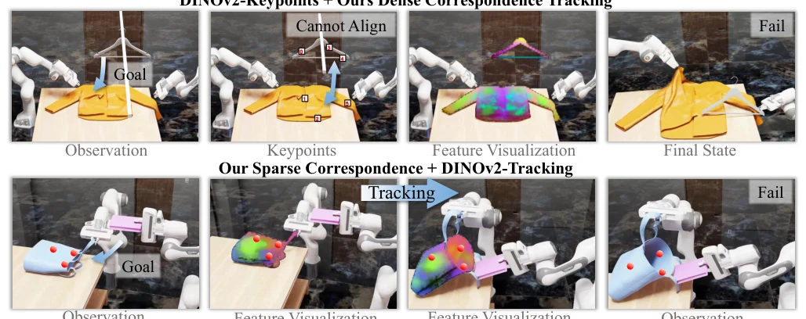
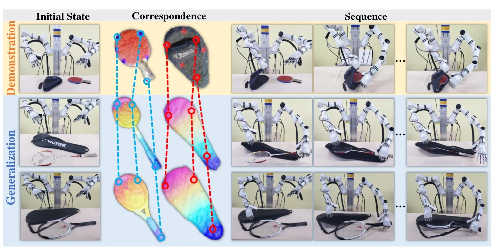
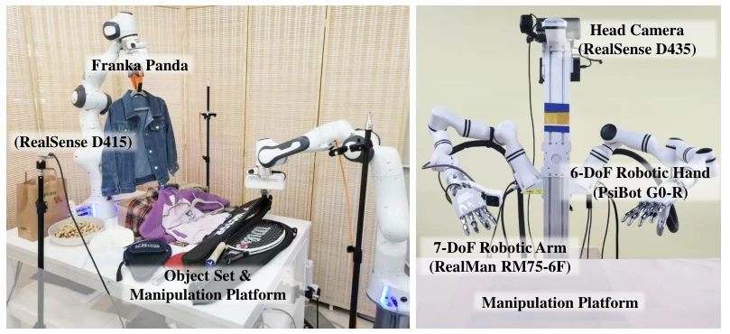

This work attempts to address the rigid-flexible interaction challenge using a "sparse + dense" hybrid correspondence, which sounds substantial. However, essentially, it is a stitching between ReKep's sparse constraints and UniGarment's dense tracking. Although claiming "single-sample transfer", it actually relies on pre-trained model distillation, where generalization capability stems more from the robustness of dense features than true physical understanding. The real-robot success rate of 65% is acceptable, but it still struggles with more complex deformation-to-deformation tasks, categorizing it as an "engineering optimization" rather than a "theoretical breakthrough" work. Its highlight lies in decoupling task constraints from deformation tracking; by anchoring sparse keypoints with dense features, it effectively solves the issue of tracking loss for deformable bodies, demonstrating robustness in specific scenarios, yet generalizability remains constrained by the distribution of pre-trained data.
Rigid-flexible interaction (e.g., hanging clothes) is a critical need for home robots, yet existing methods struggle to accommodate both. 6D pose [28, 40] cannot describe deformable bodies, sparse keypoints [8, 23] struggle to capture contact details, while full dense representation [4, 42] is heavily data-dependent and redundant for rigid bodies. The authors point out that rigid-flexible interaction is primarily determined by structural alignment; existing single representations cannot simultaneously satisfy the requirements for task-specific information encoding and deformation tracking. Therefore, a unified and data-efficient hybrid representation is required.
方法Method
框架分四步：1) VLM 分解任务阶段，区分辅助与交互阶段；2) 提取结构感知稀疏关键点，刚体用 FPS，柔体用骨架，并通过接触信息过滤得到交互约束；3) 构建位置与方向约束优化机械臂轨迹，将关键点对齐转化为优化目标；4) 引入稠密对应关系（蒸馏自 UniGarment）实现形变过程中的关键点精准跟踪。核心创新在于用稠密特征锚定稀疏关键点，既保留了约束的精确性，又解决了形变跟踪的鲁棒性问题，并支持通过特征映射泛化到新物体。此外，通过 3D 投影蒸馏 2D 预训练特征，降低了 3D 对应关系的训练成本，实现了数据高效的学习策略。
The framework consists of four steps: 1) The VLM decomposes task phases, distinguishing auxiliary and interaction phases; 2) Extract structure-aware sparse keypoints, using FPS for rigid bodies and skeletons for flexible bodies, obtaining interaction constraints through contact information filtering; 3) Construct position and orientation constraints to optimize the robotic arm trajectory, converting keypoint alignment into optimization objectives; 4) Introduce dense correspondence (distilled from UniGarment) to achieve precise keypoint tracking during the deformation process. The core innovation lies in using dense features to anchor sparse keypoints, which retains the precision of constraints while solving the robustness issue of deformation tracking, and supports generalization to new objects via feature mapping. Additionally, by distilling 2D pre-trained features through 3D projection, the training cost for 3D correspondence is reduced, achieving a data-efficient learning strategy.

Fig. 1: Correspondences for Rigid-Deformable Interactions. We propose a hybrid correspondence-based representation for rigid-deformable interaction tasks. (Left) Sparse keypoint correspondences capture the interaction information between objects. (Top-middle) For long-horizon manipulation with a sequence of actions, dense correspondences can track keypoint accurately on soft bodies across deformations, and enable one-shot transfer by mapping keypoints to new shapes.

Fig. 2: Framework Overview. Given a task demonstration, VLMs decompose it into stages. For the stages with rigid- deformable interactions, we first extract sparse keypoints as spatial constraints, then apply constraint optimization to guide the manipulation sequence, with pretrained dense correspondence to track keypoints on deformable objects.
Tested on 4 types of tasks (hanging hanger, racket into bag, etc.) on GarmentLab simulation and Franka/RealMan real robots. Baselines compared include ReKep [8] and UniGarment [42]. The simulation average success rate is 73.5%, and the real-robot rate is 65%, both superior to the baselines. Ablation experiments indicate that removing either sparse constraints or dense tracking leads to a significant performance drop, with position constraints being particularly critical. Generalization experiments show that dense feature mapping allows adaptation to objects of new shapes, but limitations remain for deformation-to-deformation tasks. The experiments also revealed that DINOv2 features exhibit poor consistency under deformation, validating the necessity of dense correspondence.

Fig. 3: Task Illustrations. Representative tasks in simulation and the real world.

Fig. 4: Ablation Studies. The top and bottom rows respectively show results of replacing Csparse and Cdense with DINOv2.

Fig. 5: Dense Correspondences Enable Generalization. Given the demonstration of table tennis racket (row 1), we can generalize to other rackets by mapping keypoints via Cdense (row 2,3).

Fig. 6: Real-world Environment and Assets Utilized.